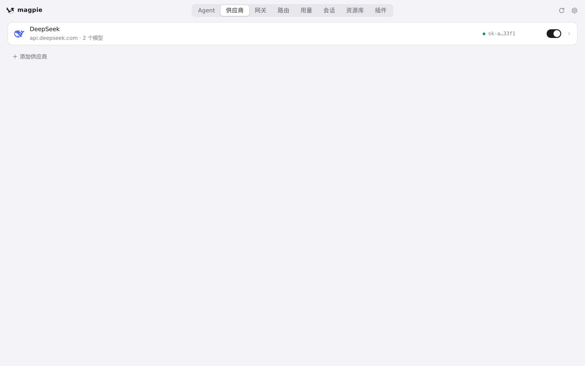
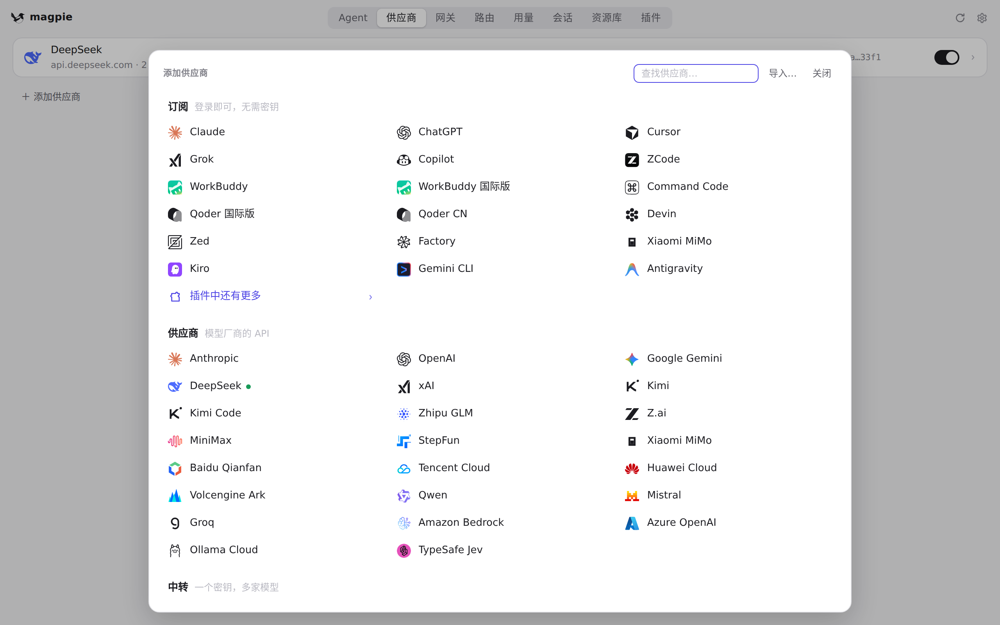
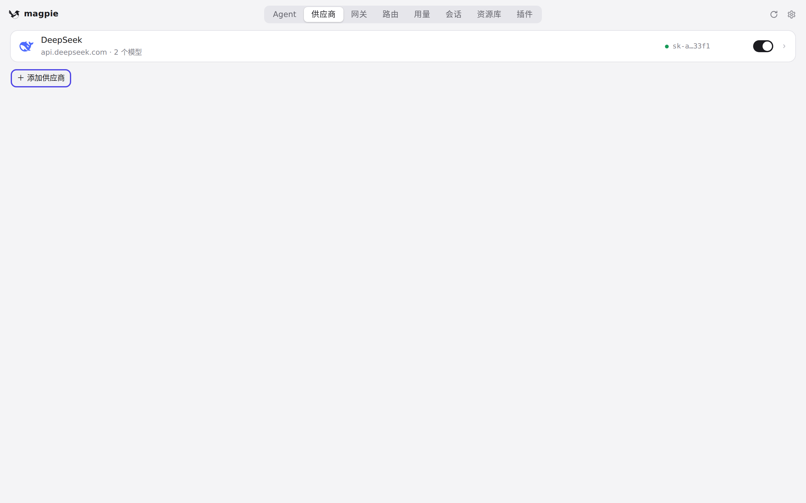
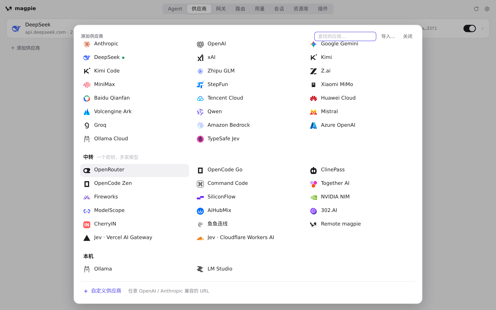
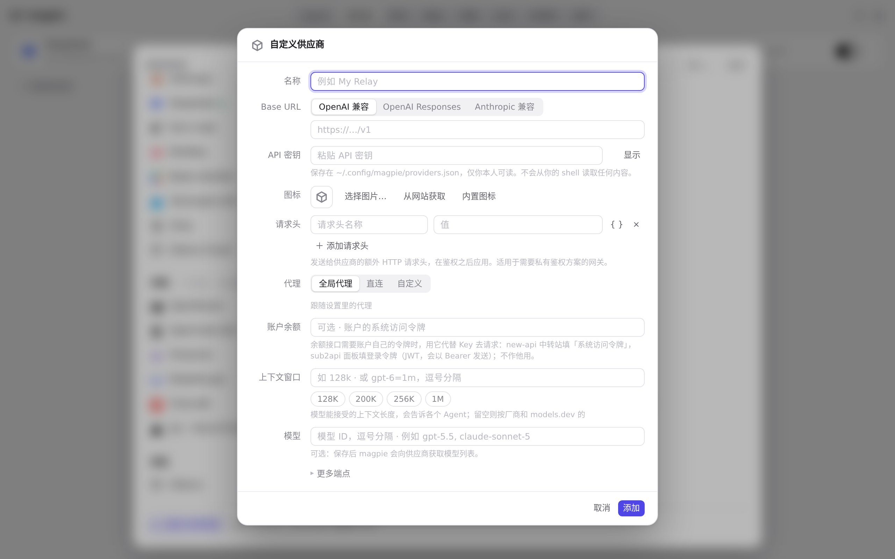
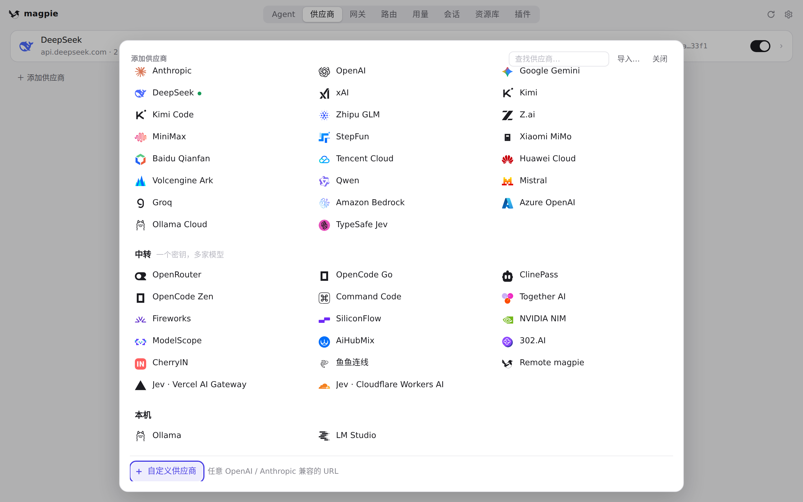
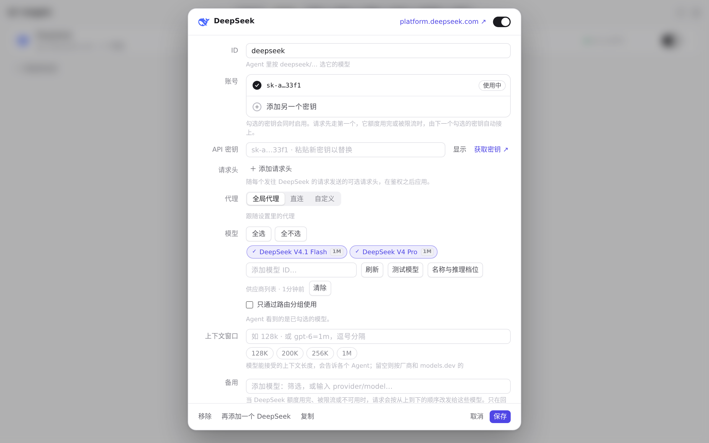
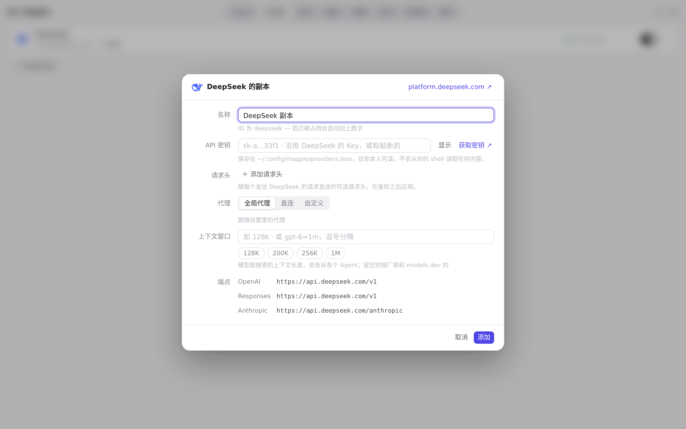

#433 界面预览
commit 4477b77 · 回到 PR · 「添加供应商」从内联展开、把页面撑高并自动滚动的抽屉，改为浮在列表之上的遮罩浮层：打开／关闭不再改变已添加供应商列表的位置与滚动高度，可用关闭按钮、点击遮罩、Esc 关闭，窄窗口下只有选项区域滚动；浮层控件的焦点会保留／恢复，编辑窗口关闭后焦点回到浮层里的原选项或搜索框；「复制」「再添加一个」改为直接打开编辑窗口，取消后回到原页面而不是留下浮层。
红线是鼠标走过的轨迹，红色圆环是一次点击；底部文字是这一步在做什么。空格暂停，← → 逐段查看。

打开／关闭添加浮层，列表不动 · 供应商页：列表与底部的「＋ 添加供应商」

打开／关闭添加浮层，列表不动 · 点击「＋ 添加供应商」之后的供应商页
 打开／关闭添加浮层，列表不动 · 在浮层里向下滚动供应商选项
打开／关闭添加浮层，列表不动 · 在浮层里向下滚动供应商选项
 打开／关闭添加浮层，列表不动 · 关闭浮层之后的供应商页
打开／关闭添加浮层，列表不动 · 关闭浮层之后的供应商页

打开／关闭添加浮层，列表不动 · 按 Esc 之后的供应商页

从浮层进入编辑窗口再返回 · 浮层底部的供应商选项

从浮层进入编辑窗口再返回 · 从浮层选项打开的编辑窗口

从浮层进入编辑窗口再返回 · 关闭编辑窗口之后的浮层

「复制」直接打开编辑窗口 · 供应商行打开的编辑窗口

「复制」直接打开编辑窗口 · 点「复制」之后的编辑窗口
「复制」直接打开编辑窗口 · 取消编辑之后的供应商页